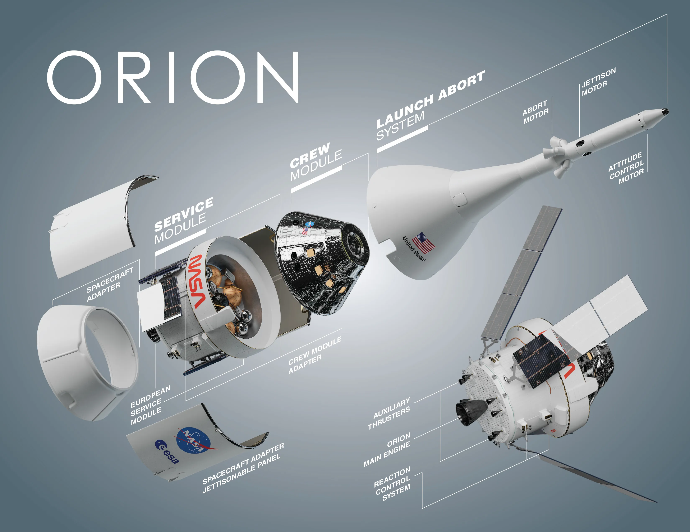

Live Mission
Artemis II
Humanity Returns to the Moon!
Four astronauts are making history as the first crewed lunar mission
since Apollo 17 in 1972.
Follow every moment of their 10-day journey around the Moon and
back!
Mission Elapsed Time
Days Hours Minutes Seconds
Days Hours Minutes Seconds
4
Crew Members
10
Mission Days
1972
Last Crewed Lunar Mission
~25K
MPH Reentry Speed
~252,799 mi
Mission Distance
April 1, 2026
Launch Date
LC-39B
Launch Pad
Live Orion Tracker
Live Launch Coverage
Mission Timeline
Day 0
Launch
SLS lifts off from LC-39B at Kennedy Space Center, Florida at 6:24PM EDT
SLS lifts off from LC-39B at Kennedy Space Center, Florida at 6:24PM EDT
Day 1
Systems Check
Crew verifies Orion's life support, navigation, and commjnication systems in Earth orbit
Crew verifies Orion's life support, navigation, and commjnication systems in Earth orbit
Day 3
Trans-Lunar Injection
ICPS engine burn sends Orion on its trajectory toward the Moon
ICPS engine burn sends Orion on its trajectory toward the Moon
Day 5
Lunar Flyby
Orion reaches closest approach to the Moon then swings around to 4,600 miles beyond the lunar far side
Orion reaches closest approach to the Moon then swings around to 4,600 miles beyond the lunar far side
Day 10
Splashdown
Orion re-enters at 25,000 mph and splashes down in the Pacific Ocean off San Diego, CA
Orion re-enters at 25,000 mph and splashes down in the Pacific Ocean off San Diego, CA
